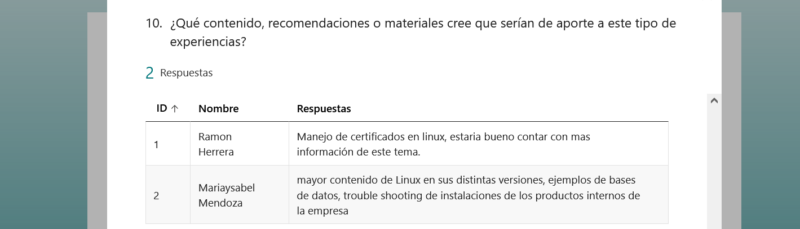
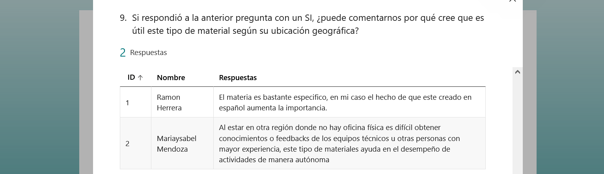

Evidencia: Nuestra práctica desde adentro y el detrás de escena.
¿Cuáles son los hitos documentales adicionales a los que hemos publicado y relatado en los otros apartados?
- Nuestra gran reunión con el líder técnico, Carlos Atabales, de Chile, parte de la empresa.
Carlos se presentó muy dispuesto a colaborar como especialista y a colaborar activamente en la revisión de nuestro material instruccional para no perder el foco de lo necesario para el área, recorte de nuestra práctica.
- ¿Como nació la wiki?
El momento "Manos a la obra de la Wiki comenzó con un par de lineas, algunos títulos. La mayoría de la ínformación volaba por Whatsapp en distintos horarios. Asi comenzaba y terminaba:
Puede navegarse un poco en una captura completa vertical. Pero para mas detalles pueden ver la presentación anterior y su link o el video a continuación.
- ¿Como se veía todo completo wiki + yammer?
Así se ve el contenido creado y diseñado desde 0 para la práctica realizada en Wiki.js y Yammer para las actividades prácticas
- ¿Como se ve un laboratorio de linux?
El laboratorio creado para las actividades es una máquina virtual provista por la empresa para esta actividad particular. La creación de los recursos internos fue creada por nosotros para que los analistas puedan cumplimentar con sus actividades. En este breve video se puede observar la estructura, los archivos, carpetas y el registro de lo realizado por los analistas tras finalizar las actividades.
- ¿Hicimos una encuesta? hicimos una encuesta!
Al finalizar las actividades realizamos una encuesta para poder recolectar algunos puntos importantes de la actividad, para que además de los comentarios realizados via chat y en el encuentro, tengamos registro de una devolución formal. Y poder realizar un analisis del mismo.
¿Cómo fue la encuesta:
¿Como fue el resultado?
- ¿Que datos importantes surgieron de alli?
- Si bien los analistas que realizaron la actividad, ya contaban con experiencia en las tecnologías, ambos transmitieron que desconocían el 50% del material instruccional. Punto imoprtante para evidenciar el aporte de la práctica en cuanto a contenido. - Transmitieron que el contenido les fue claro de entender. - Conocimos que ninguno de ellos había recibido este timpo de formación lo que nos hace inferir un impacto positivo de la práctica realizada. - Encontramos escenarios extra a los definidos al inicio en los que los analistas necesitan este tipo de formación, dandonos aun mayor contexto del alcance de estas actividades. No solo de cara al cliente indican que es importante, sino también internamente para colaborar con otras áreas. - El hecho de que el material esté redactado en español fue uno de los puntos que comentaron como un gran aporte, ya que la mayoría del mismo está en Inglés, y no siempre las tradicciones son fiables. - Resaltan este tipo de actividades como fundamentales para poder desarrollar independencia aquellos que se encuentran en horarios muy diferentes. - Encontramos que hay mas material necesario de este tipo para los analistas. El mismo ha sido recolectado y escalado al lider técnico para futuras creaciones de material y actividades.


- ¿Cómo se vieron reflejados los aprendizajes obtenidos por los analistas en Yammer?Los invitamos a ver un poco como quedaron reflejadas las actividades en el espacio propuesto para compartir los resultados:
- Tuvimos reuniones e hicimos minutas? claro que si.
Les compartimos las actividades desde el inicio de nuestra práctica hasta su finalización y publicación: